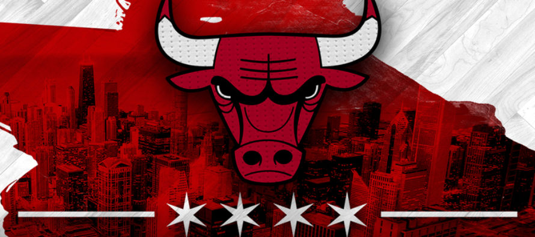

Chicago Bulls
«Чикаго Буллз» (англ. Chicago Bulls) - професійна баскетбольна команда, яка базується в місті Чикаго, штат Іллінойс, виступає в центральному дивізіоні східної конференції НБА. Домашні ігри проводить в «Юнайтед-центр». Команда була заснована в 1966 році і найбільш відома як одна з найбільших династій в історії НБА, яка виграла шість чемпіонських титулів за вісім років в кінці XX століття (1991-1993 і 1996-1998). До всіх шести чемпіонських титулів «Буллз» вели Майкл Джордан, Скотті Піппи і головний тренер Філ Джексон.
У сезоні 1995-96 «Буллз» виграли 72 гри в регулярному сезоні, ставши першою командою НБА, яка змогла подолати рубіж в 70 перемог (досягнення «Буллз» було перевершено в 2016 році «Голден Стейт Ворріорс», які виграли 73 матчі). Фінал НБА 1998 року між «Буллз» і «Ютою Джаз» вважається найбільш рейтинговим телевізійним подією, а 6 гра серії зібрала максимальну телеаудиторію в історії НБА.
Остання перемога
 |
87 - 119 |
 |